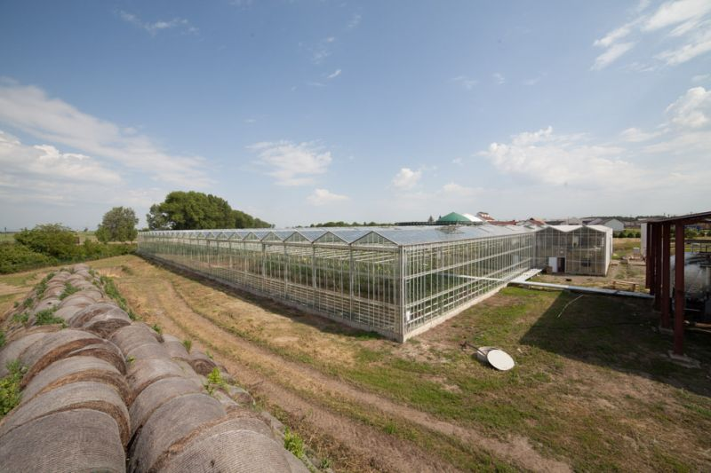
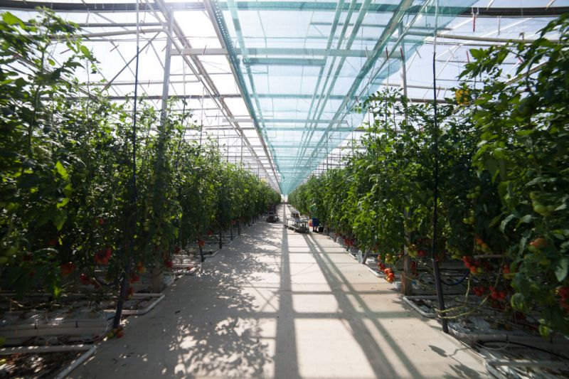
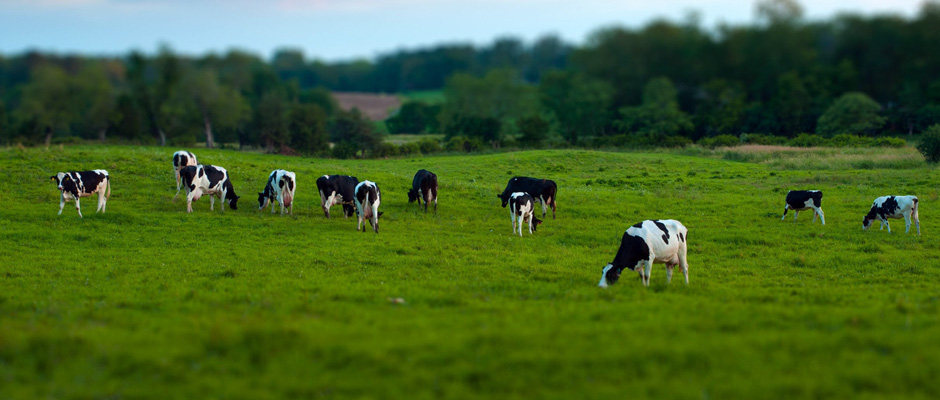
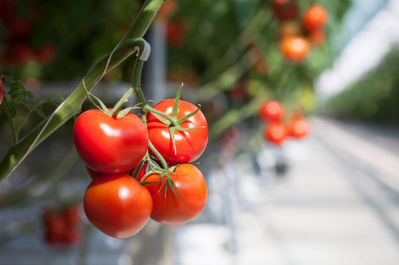

Nadviazali sme na poctivú regionálnu tradíciu v Oboríne. V modernom hydroponickom skleníku na ploche 1 ha pestujeme kvalitné paradajky s ročnou produkciou približne 350 000 kg a popri rastlinnej výrobe rozvíjame aj živočíšnu výrobu a bioplyn.

Farma Oborín pestuje kvalitné skleníkové paradajky hydroponickým spôsobom na ploche 1 ha. Ročná produkcia dosahuje približne 350 000 kg a vďaka technologickým riešeniam vieme paradajky ponúkať od marca až do decembra.
Hydroponický skleník
Dostupnosť paradajok

V skleníku pestujeme viacero typov paradajok podľa veľkosti, chute a spôsobu zberu. Sortiment je vhodný pre maloobchod, gastronómiu aj veľkoobchodných odberateľov, ktorí potrebujú stabilnú kvalitu a jasne definované parametre.
Okrúhle, tmavočervené a lesklé plody s vysokým obsahom lykopénu.
Dlhé desaťplodové strapce s voňavou a lahodnou chuťou.
Podlhovastý tvar, vhodné na voľný zber, šťavnaté a sladké plody.
Veľmi dlhé strapce so 14 plodmi, tmavočervené, chrumkavé bobule.

Nadviazali sme na poctivé družstevné základy našich predkov. Kompletne sme zrekonštruovali a zmodernizovali kravíny tak, aby sme zvieratám zabezpečili maximálny komfort, čistotu a optimálne podmienky pre zdravý vývoj.
Kontrolovaný pôvod krmiva
Welfare štandardy ustajnenia
Všetok biologický odpad z chovu dobytka a rastlinnej výroby spracovávame priamo na farme v našej modernej bioplynovej stanici. Vyrobená elektrická energia a teplo poháňajú náš sklenník a technológie, čím minimalizujeme našu uhlíkovú stopu.
Garantujeme stabilné dodávky, špičkovú čerstvosť a transparentný pôvod priamo z našej farmy v Oboríne.

Hydroponicky pestované na ploche 1 ha s ročnou produkciou približne 350 000 kg. Od marca do decembra dodávame strapcové, kokteilové, cherry aj čerinky paradajky.
Moderné pestovanie s kvapkovou závlahou, tieňovaním, vykurovaním, vetraním a biologickou ochranou rastlín pre stabilnú kvalitu úrody.
Zabezpečujeme stabilné dodávky surovín zo živočíšnej výroby a organické hnojivá vznikajúce ako vedľajší produkt našej bioplynovej stanice.
Pre otázky k skleníkovej produkcii, ekonomickým údajom alebo bioplynovej stanici kontaktujte priamo zodpovedné osoby. Prevádzka farmy sa nachádza v Oboríne.
Všeobecný e-mail
farmaoborin@nasefarmy.euSídlo spoločnosti
Farma Oborín, s.r.o.
Vlčia dolina 958
049 25 Dobšiná
Prevádzka
Farma Oborín, s.r.o.
Hospodársky dvor 185
076 75 Oborín
Údaje o spoločnosti
Tu bude mapa prevádzky
Hospodársky dvor 185, 076 75 Oborín
Prevádzka farmy
Hospodársky dvor 185, Oborín